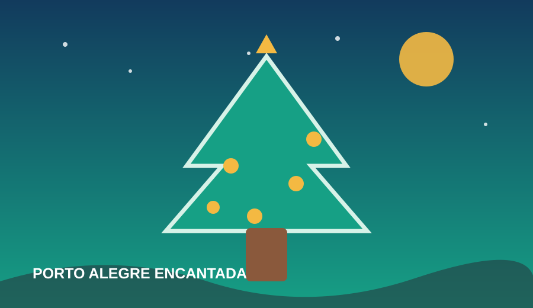

NATAL • CULTURA • LAZER
Porto Alegre Encantada
Uma programação especial de Natal no Parque Harmonia, com espaços temáticos, feira, corais e iluminação para celebrar o fim do ano na cidade.
Área Encantos de Natal gratuitaInformações do evento
📅 Data3 a 23 de dezembro de 2026
🕒 HorárioTerça a domingo, das 17h às 23h
📍 LocalParque Harmonia (Parque Maurício Sirotsky Sobrinho)
🏠 EndereçoAvenida Edvaldo Pereira Paiva, 63 – Praia de Belas, Porto Alegre/RS
O que vai ter?
A área Encantos de Natal terá corais, feira e acendimento das luzes entre 19h30 e 20h. A Vila da Harmonia contará com atrações temáticas e espetáculos pagos. A programação artística completa pode receber atualizações; consulte os canais oficiais antes de sair.
Ingressos e valores
- Encantos de Natal: acesso gratuito.
- Vila da Harmonia: ingresso informado pela Prefeitura de R$ 20 por pessoa nos dias de semana e passe família de R$ 200 para até quatro pessoas aos fins de semana.
- O espetáculo “Meu Pedido de Natal” possui ingresso/pacote específico. Confira as datas e condições na página de venda.
Os valores, modalidades e condições podem mudar. Confirme as informações e a disponibilidade antes de comprar.